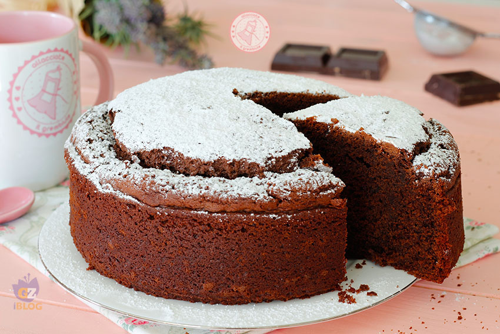

Gli algoritmi e le variabili
Ti piace cucinare? Perché oggi uniremo una lezione di cucina con una di programmazione. Incredibile, vero? Immaginiamo di dover cucinare una semplice torta al cioccolato. Andiamo!

Ecco cosa ci serve per cucinare una buonissima torta al cioccolato:
- 250 gr di farina
- 150 gr di zucchero
- 150 gr di cioccolato fondente
- 100 gr di burro
- 4 uova
- 1 bustina di lievito per dolci
- Zucchero a velo
Bene! Sono felice di annunciarti che tutti quegli ingredienti che ti ho elencato nel linguaggio informatico sono chiamati input. La nostra missione è eseguire la ricetta, usando i nostri algoritmi, per poi ottenere il piatto finale, detto output.
Ora procediamo! Ecco i passi della preparazione (Don't worry, ora capirai perché ti sto mostrando tutto questo)
- Sciogiere a bagnomaria il cioccolato per 2 minuti
- Nel contenitore A unire al cioccolato il burro, per poi mescolare
- Nel contenitore B, unire le uova e lo zucchero, per poi montare tutto
- Aggiungere nel contenitore B il composto di cioccolato e burro raffreddati
- Aggiungere nello stesso contenitore farina e lievito
- Mescolare il tutto e inserire in teglia imburrata in forno statico a 180° per 30 minuti
Avrai notato che ho avuto cura nel distinguere il contenitore A dal contenitore B. Bene, nel linguaggio informatico tali contenitori sono definiti variabili.
e l'algoritmo?
L'algoritmo altro non è che la ricetta che hai appena letto! Incredibile, vero? Adesso, però, facciamo un esempio concreto della nostra ricetta.
Partiamo dai nostri ingredienti, ossia le variabili. Devi sapere che:
- hanno nomi unici
- sono totalmente riutilizzabili
- si chiatano usando la keyword let
- seguono le convenzioni camelCase
- possono avere dei valori definiti, non definiti o inesistenti; nel primo caso avremo il simbolo = con un valore, nel secondo la dicitura undefined e nel terzo la dicitura null
Facciamo un esempio:
let zuccheroBianco = 150
É ora!
- let farinaBianca = 250
- let zuccheroBianco = 150
- let cioccolatoFondente = 150
- let burro = 100
- let uova = 4
(etc)
Dunque, prendiamo il nostro contenitore A:
let contenitoreA = cioccolatoFondente + burro
let contenutoreB = letcontenitoreB + uova + zucchero + farinaBianca + lievito (etc)
Abbiamo finalmente scritto un esempio di algoritmo, usando le sue variabili. Super! Ci vediamo alla prossima.